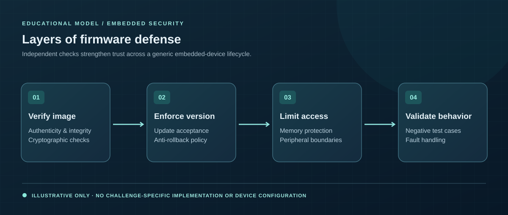

06 / PROJECT CASE STUDY · 2026
Embedded Firmware Security Challenge
Exploring firmware integrity, memory isolation, and authorization under adversarial constraints.

01 / CONTEXT
The challenge
Embedded devices need to establish software authenticity and preserve isolation even when attacker-controlled inputs or physical access are part of the threat model.
02 / EXECUTION
My approach
- Worked with AES encryption, HMAC-SHA-256 integrity checks, and anti-rollback protections in a firmware security challenge.
- Applied ARM MPU least-privilege concepts to memory and peripheral access.
- Tested access controls, PIN gating, and memory-handling protections against unauthorized-access scenarios.
03 / EVIDENCE
Outcomes & contribution
- Applied several layers of firmware security controls rather than relying on a single defense.
- Explored the connection between software authenticity, memory isolation, and runtime access.
- Validated security behavior through unauthorized-access testing in the challenge setting.
04 / TAKEAWAY
What I learned
Effective embedded security combines multiple checks across boot integrity, permissions, and runtime isolation.
Sharing & confidentiality
Public high-level educational summary only; no sensitive implementation material or challenge secrets are included.